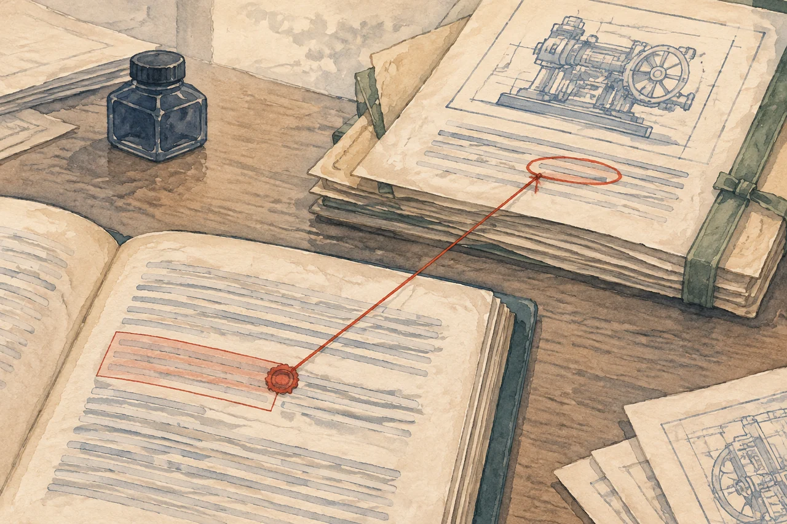
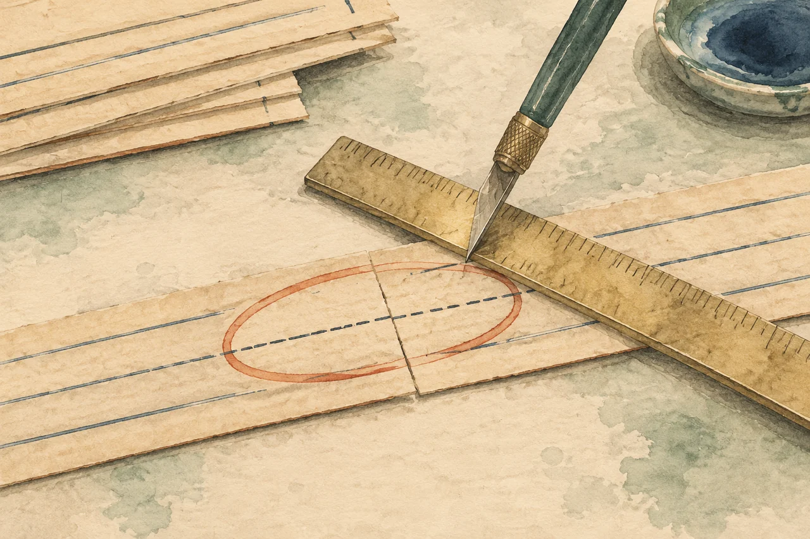
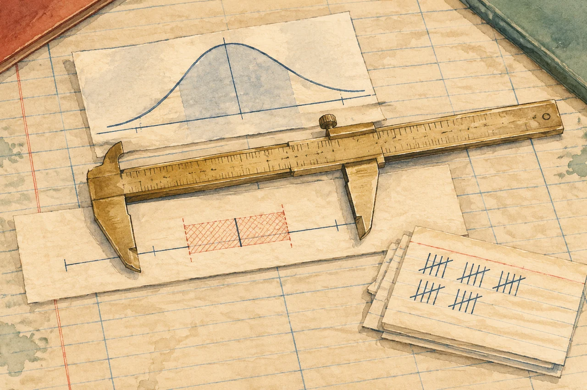

VOL.13 检索增强生成 · 工程手册
证据链 RAG 从「问答」到「逐条留证」——把检索结果变成可验收的证据。
一句话
固定长度切分一定会切到某条限定语，只是概率高低；纯向量检索会把「话题相近」排到前面，让编号类证据沉底。这篇不报任何实验成绩，只给一套能自己跑出成绩的施工图。RAG 的门槛不在接上模型，在证明它是对的。
- 对比文件
- CN 1 145 xxx xx A 权利要求 1、说明书 [0042]
- 命中段落
- 说明书 [0042] char 1 284–1 517
- 判定
- 支持（逐字公开了区域分割与两类特征的提取顺序）
「……对目标图像按区域分割后，分别提取纹理特征与轮廓特征，并记录各区域的边界坐标。」

大多数 RAG 项目死在同一个地方：它答得像对的。你问它「这份文件公开了哪些特征」，它给你一段读起来非常专业的总结，引用了三段原文，语气笃定；你抽查第一段，发现引用的段落里根本没有那个限定语。它没有撒谎，它只是把「话题相近」当成了「证据成立」。这个错误在演示里看不出来，在上线后每天发生几十次。
所以这篇不写「怎么把向量库接上大模型」。那部分一晚上就能做完，做完也就停在 Demo。这篇写的是更难的一半：怎么把一次检索变成一个可以判定、可以拒答、可以复算的证据。为了让这件事具体，我用一个真实存在的任务做载体——给定一条专利权利要求，从一批对比文件里找出每个技术特征对应的原文段落，逐条留证，找不到就拒答。
选它不是因为专利热，而是因为它把 RAG 的三个难点同时摆在桌面上：检索要精确（术语、编号、否定），输出要可核（引用必须真的支持结论），错误要能拒（没有证据时闭嘴）。这三点做到了，换成合同、财报、病历、内部规章，方法都能搬。
范围说明：本文是实验设计，不是实验结果。不含任何真实客户数据，也不含我自己的跑分；文中四枚小样里，只有 Wilson 区间那一枚是真实计算（公式可复算），其余三枚（切分几何、混合召回分值、预算曲线）的数值均为示意构造，用来让机制可见。真实指标请按第 6 章流程自行跑出，不要把示意值写进简历、汇报或任何对外材料。
任务的解剖
「问答」和「留证」看起来都是生成文本，但它们的最小单位不一样。单位一换，评测、拒答、追责全都跟着变。
先说清楚两者的差别。问答系统的最小单位是一个问题：输入问题，输出一段回答，好不好由人读一遍判断。证据链的最小单位是一个技术特征 × 一段原文 × 一个判定：一条权利要求先被拆成若干特征，每个特征都要找到一段能支撑它的原文，并且给出「支持 / 部分支持 / 无」的三级判定。
这个转换听起来只是粒度变细，实际上改变了三件事。
一、评测从主观变成可算
问答的评测通常只能到「读起来对不对」。证据链不一样：每个特征都有一个 gold 段落，系统有没有找到、引用得准不准、判定的三级对不对，全都可以逐条比对。也就是说，你能算出 Feature Recall@5，能算引用精确率，能算拒答正确率——这些数字可以放进对比表，也可以在下一次改动后复算。
二、拒答从「不想答」变成「必须答」
问答系统拒答是可选行为，模型愿意编就编。证据链里拒答是一等公民：如果 30 篇对比文件里确实没有任何一段公开某个特征，正确行为就是明确说「未找到证据」，而不是找一段最像的凑上去。这一条把幻觉从「质量问题」变成「判定错误」，可以被计数。
三、错误从「感觉不对」变成「可定位」
当输出是一张证据表，用户能直接看到：F3 引用的段落其实讲的是另一个步骤。错误定位到「特征 + 段落 + 判定」这一格，修复也就有了方向——是召回没找到，还是验证器放过了，还是切分把限定语切走了。
为了让后面的讨论有依托，先把输出结构定死。一个特征一条记录，字段不多，但每个字段都要能撑住追问：
// 一条证据记录：字段少，但每个都要能被追问
{
"feature_id": "F2",
"feature_text": "对目标图像进行区域分割并提取纹理与轮廓特征",
"doc_id": "CN1145xxxxxA",
"section": "description", // claims / description / embodiment
"para_no": "0042", // 段落编号，必须能对上原文
"char_span": [1284, 1517], // 字符区间，便于高亮与复算
"quote": "……对目标图像按区域分割后，分别提取纹理特征与轮廓特征……",
"verdict": "supported", // supported / partial / none
"confidence": 0.87,
"route": "hybrid+rerank", // 哪条检索路径给出的
"attempts": 1 // 第几轮找到的，用于循环上限
}这里有两个字段容易被省掉，但省掉就失去可追性。char_span 让引用可以高亮、可以核对，而不是只给一个段落编号；route 让「这条路找到的」和「那条路找到的」可以分别统计，第 3 章的混合检索对比才有意义。
如果换一个任务（合同条款、财报科目、病历诊断），你还能用同一套字段表达「哪一段支持哪一个结论」，说明抽象是对的；如果字段要重写，说明你其实在做另一件事，别硬套。
切分的边界
切分不是预处理，是建模。切错一刀，后面所有检索都在为一个错误的前提服务。

最常见的做法是固定长度切分：每 500 字一刀，重叠 100 字。它对博客和说明书够用，对法律文本是灾难。原因很具体——法律文本的语义边界是条款边界，不是字数边界。一个技术特征常常横跨「其特征在于」之前和之后：前半句是主体（对什么做什么），后半句是限定（用什么参数、什么条件、什么顺序）。固定长度一刀下去，最典型的结果是主体和限定被分到两个 chunk，检索时只召回其中一个，生成时补上另一半的「常识」，于是得到一个看起来完整、实际不存在的特征。
三种破坏方式值得单独记住：
| 破坏 | 怎么发生 | 后果 |
|---|---|---|
| 切断特征 | 边界落在「其特征在于」与限定语之间 | 召回只拿到主体，生成自行补全限定，产生不存在的特征 |
| 孤立套话 | 「所述」「其特征在于」占满一个 chunk | 高相似度但零信息，挤占 top-k 名额 |
| 跨段拼接 | 重叠区把上一段结尾和下一段开头连在一起 | 引用时给不出准确段落号，无法核对 |
结构感知切分的做法是：先按文档结构切成权利要求、说明书、实施例、附图说明，再在段内按句切，最后把每段的 doc_id / section / para_no / char_span 一起存进索引。这样一来，召回的最小单位是一段有明确出处的原文，引用才可能精确到段落。
拖动切分长度，看多少个技术特征会被一刀切断。绿色完整，红色被切。
把长度从 240 拖到 60，你会看到特征一个接一个被切开。真正要记住的不是「该用多少字」，而是：只要边界由字数决定，它就一定会切到某条限定语，只是概率高低。结构感知把这个概率从「取决于运气」降到「接近零」，代价是你得先解析文档结构——这一步在中文专利 PDF 上并不轻松，扫描件、双栏、表格、公式都会来捣乱。
上面的切分小样用的是 5 条示例特征和一段固定文本，拖滑块得到的是几何后果（刀口有没有落在特征区间内），不是真实语料上的统计。真实特征完整率必须拿你自己的标注集去跑，代码逻辑与这里一致：判断 边界 ∈ (特征起点, 特征终点)。
召回的预算
向量擅长「意思相近」，弱在编号、罕见术语、否定。一路 BM25 补上精确，一次重排负责收口。
纯向量检索的问题不是「不够强」，是它的相似度有自己的偏好。它偏爱语义相近：一段讲「相似度计算」的文字，跟「外观相似度评估」在向量空间里很近，即使它讲的是完全不相关的方法。它在三处系统性失灵：
- 编号与型号：
CN1145xxxxxA、[0042]这类 token，向量几乎不携带信息，但 BM25 一击即中。 - 罕见术语：训练语料里少见的专业词，向量被邻居词稀释；BM25 靠字面精确匹配反而稳。
- 否定与例外：「不包含」「除……之外」在向量里常被当成语气词，检索结果与肯定句几乎同分。
所以实用的做法是混合召回：向量与 BM25 各取一路候选，合成一个列表，再交给重排。合成方式有两种常见选择——加权求和，或者 RRF（倒数排名融合）。RRF 只依赖名次，不依赖分值分布，跨检索器更稳：
# RRF：只吃名次，不吃分值，跨检索器更稳
def rrf(rankings, k=60):
score = {}
for ranking in rankings:
for rank, doc in enumerate(ranking, start=1):
score[doc] = score.get(doc, 0.0) + 1.0 / (k + rank)
return sorted(score.items(), key=lambda x: -x[1])
# 加权求和：简单直观，但需要调权重、且各路分值尺度要可比
# score = 0.45 * vec_score + 0.55 * bm25_score重排是最后一道收口。cross-encoder 会把「查询 × 段落」拼起来打分，比双塔向量准得多，但成本也高得多，所以只对召回后的前 20–50 条做，不参与全库。下面这枚小样把三档配置放在一起，你能看到每一步既修好一些东西，也可能弄丢一些东西。
| # | 段落 | 判定 | 内容与问题 |
|---|
分值为示意；混合档使用 0.45×向量 + 0.55×BM25，重排档按 cross-encoder 分值截取 top-3。
请重点看两件事。第一，纯向量的 top-3 里有两段是「话题很近但没有公开任何特征」——这种结果最危险，因为它读起来最像正确答案。第二，加 BM25 之后，靠编号命中的那段从第 6 名跳到第 1 名，但同时挤掉了原本正确的一段；加重排之后，三路的信息才真正合到一起，top-3 全对。
上表六条段落的向量分、BM25 分与重排分都是我手写的，目的是让「加一路会挤掉另一路」这件事看得见。真实的分值分布不会这么干净。要用它，就把 PASSAGES 换成你跑出来的候选段落与真实分值，逻辑不用改。
混合检索不是「多一路更保险」，而是「多一路会改变名单」。所以每次加一路，都要重新跑一遍评测，而不是凭感觉觉得应该更好。这也是第 6 章那张实验矩阵存在的理由。
k 不是一个越大越好的数字
召回几段给模型看，是一个预算问题，不是「多多益善」。加得越多，召回率单调上升，但答案准确率会在某个点之后开始下降——多出来的段落里，总有几段话题相近却不支撑结论，模型被它们带偏。同时 token 与成本线性增长。所以 k 要选在「边际收益开始转负」之前。
这条曲线是示意，不是实测：召回率用 0.97×(1−e^(−k/2.2)) 生成，准确率用一条见顶回落的经验式生成，只为演示「k 不是越大越好」的形状。真实曲线必须自行实测。
注意那条红线：它先升后降。上升段是「多给几段，多找到一点证据」；下降段是「多给的段落开始干扰判断」。两条线的差值在 k≈6 附近最大，那就是这个场景下的合理预算。把这个结论写进 README 比写「我们用了 top-10」有用得多——前者说明你测过，后者只说明你抄了个习惯。
判定的三级
支持、部分支持、无证据。第三个才是最难写的那个分支。
有了候选段落，下一步是判定：这段文字到底有没有公开这个技术特征。这里最容易犯的错是把判定做成二值——「像」就给 1，「不像」就给 0——然后在阈值上反复调。更好的做法是三级，因为它对应三种完全不同的动作：
| 判定 | 含义 | 动作 | 典型误判 |
|---|---|---|---|
| 支持 | 段落逐字或等价地公开了该特征的全部限定 | 留证，计入召回 | 把「同类方法」当成「同一方法」 |
| 部分支持 | 公开了主体，但缺少关键限定（参数、顺序、范围） | 留证但不计入精确率，进人工复核 | 为了凑齐证据，把部分当全部 |
| 无证据 | 检索范围内没有任何段落公开该特征 | 明确拒答，不出结论 | 用最相似的一段硬凑 |
为什么「部分支持」必须单列？因为它是最常见的真实情况，也是幻觉的主要来源。一段文字讲了「对图像进行区域分割」，但没讲「提取纹理与轮廓特征」——它支持了一半。如果系统把它算作支持，引用精确率会虚高，用户看到引文与结论不符，信任立刻崩塌。把它单列出来，精确率只统计完全支持，幻觉率才可能被真正压下去。
拒答优先
在证据类任务里，「不知道」是合格答案，「编一个」是不合格答案。所以判定阈值不应该追求「尽量给出结论」，而应该追求「结论必须站得住」。工程上的做法是三重条件取「或」——任一不满足就拒答：
- 检索门槛：最高分低于阈值，或 top-k 分值过于平坦（没有明显的第一名）。
- 判定门槛：验证器给出的判定不是「支持」。
- 一致性门槛：同一特征在两轮独立查询里指向不同段落，且互相矛盾。
阈值本身不应该拍脑袋。做法是在验证集上扫一遍阈值，画一条权衡曲线：横轴是阈值，纵轴两条线——错误作答率（把无证据判成有）和错误拒答率（把有证据判成无）。两条线的交点附近是可用区间，具体取哪一点取决于业务代价：漏检一个特征的代价如果高于多拒答一次，就选偏保守的一侧。
对外输出时，把「未找到证据」写成具体句子，不要写成空白或「N/A」：「在本次检索的 30 篇对比文件中，未找到公开 F4「权重由区域面积确定」的段落。」这句话本身就是一个可验收的结论，用户能据此判断是检索范围不够，还是真的没有。
还有一个细节值得单独说：判定器（verifier）的提示词要让它引用原句，而不是只给标签。要求它输出「判定 + 支撑原句 + 缺失的限定」，你才能判断它是真读了还是顺着问题附和。这一步几乎不增加成本，却能把大量「看起来对」的判定筛出来。
多步的算术
单步 95% 听起来很高。五个特征串起来，只剩 77%。
证据链天然是多步的：拆特征、生成查询、召回、重排、判定、汇总。每一步都有成功率，而端到端成功率是它们的乘积。这不是悲观假设，是乘法：
| 步数 | 单步 0.95 | 单步 0.92 | 单步 0.99 |
|---|---|---|---|
| 3 | 0.857 | 0.779 | 0.970 |
| 5 | 0.774 | 0.659 | 0.951 |
| 8 | 0.663 | 0.513 | 0.923 |
| 10 | 0.599 | 0.434 | 0.904 |
0.95 / 0.92 / 0.99 为各步典型量级示意；真实值需按第 6 章分步统计。
结论不是「不要多步」，而是「多步必须有闸」。三道闸，按性价比排序：
闸一：验证器
在汇总之前，对每个「特征 × 段落」单独问一次：这段是否公开了该特征？输出三级判定加支撑原句。它的作用不是提高正确率，而是把错误拦在输出之前，变成拒答而不是错答。代价是每特征一次额外调用，量级可控。
闸二：循环上限
每个特征最多检索 3 轮；如果新一轮的查询与上一轮重复，或召回结果没有新增段落，立刻停。这一条专门防 Tool Loop——模型不断改写查询、不断拿到同一批结果、不断说「再试一次」。没有上限，一次失败会烧掉几十次调用和几分钟。
# 每步即事务：先落日志，再执行；重跑不重放已判定
for feat in features:
if ledger.has(feat.id, "verdict"): # 幂等：已判定就跳过
continue
seen = set()
for attempt in range(1, 4): # 闸二：最多 3 轮
q = build_query(feat, attempt)
if q in seen: break # 查询重复即停
seen.add(q)
hits = retrieve(q, k=8)
if not hits - ledger.seen_docs: break # 无新增即停
v = verify(feat, hits) # 闸一：三级判定
ledger.write(feat.id, v) # 先写日志，再决定去留
if v.verdict == "supported": break
else:
escalate(feat) # 闸三：人工接管队列闸三：人工接管
置信度低于阈值、判定为「部分支持」、或多轮仍未找到的特征，进复核队列，由人看证据卡决定。关键设计是：人工已经判定过的结果不能被重跑覆盖。这条听起来像细节，实际是可用与不可用的分界线——如果每次重跑都把人的结论冲掉，复核就等于白做。
多步系统最典型的故障不是「算错」，而是「重复劳动」：进程重启后从头再来，把已经发出去的调用重放一遍，成本翻倍、结果还可能不一致。所以日志要先写后做，状态要能从中断处恢复，已完成的步骤不重放。这一条比任何提示词技巧都重要。
评测的实验
先冻结标注，再写代码。这个顺序是防作弊的唯一办法。

评测最容易出的问题不是算错，是边做边改标准：系统跑出 60%，于是把标注里「太难的」样本删掉两条，变成 72%。这种数字写进简历，面试官问一句「你的标注是怎么冻结的」就穿。所以流程必须是：标注先做完、先冻结、先记录，代码之后才写。
标注长什么样
20 组 claim–feature 标注，每组展开成 4–6 个技术特征，合计约 100 个特征级样本。每组要写清楚：
- 权利要求原文（截图或文本，标来源与抓取日期）
- 拆出的技术特征列表（这是主观动作，要写下拆分依据）
- 每个特征的 gold 段落：
doc_id + para_no + char_span + 原句 - 是否「无证据」——务必留 4–6 组，专门测拒答
- 标注人、标注时间（同一批标注不要跨天，避免标准漂移）
七个指标
| 指标 | 定义 | 注意 |
|---|---|---|
| Feature Recall@k | 每个特征，top-k 是否含 gold 段落；命中特征数 / 总特征数 | 按特征计，不按问题计 |
| Citation Precision | 系统引用的段落里，真正支持该特征的比例 | 「部分支持」不计入分子 |
| Citation Recall | gold 段落中被系统引用的比例 | 引多了扣精确率，引少了扣召回 |
| Refusal Accuracy | 无证据正确拒答 + 有证据正确作答，占总数的比例 | 必须包含两类错误，不能只算一类 |
| Faithfulness | 生成内容不超出被引段落的程度 | LLM judge + 人工抽检 10 条 |
| P95 延迟 | 端到端耗时的 95 分位 | 均值会掩盖长尾 |
| 单次成本 | token 数 × 单价，按查询统计 | 区分检索侧（本地）与生成侧（API） |
报区间，不报单点
20 组标注意味着单个指标只有几十个样本。这个量级下，3/19 和 5/19 看起来差了 67%，实际上可能完全不可区分。用 Wilson 区间算一下就知道：3/19 的 95% 区间约是 [5.5%, 37.6%]，5/19 约是 [11.8%, 48.8%]，两段区间大面积重叠——这个差异不显著。如果你在报告里写「提升了 67%」，懂统计的面试官会立刻追问样本量。
Wilson 95% 区间，z = 1.96；用于小样本比例估计，比正态近似更稳。
实验矩阵，而不是一张成绩单
四档配置的意义不在于「最后一档最高」，而在于每一档隔离一个变量。跑完要能回答：如果只保留混合召回、不做重排，损失多少？如果去掉验证器，错误流出会增加多少？这张矩阵没跑完，就不要对外说「效果提升了」。
| 配置 | 隔离的变量 | 预期变化 | 若不符合，说明什么 |
|---|---|---|---|
| ① 纯向量 | 基线 | — | 语料里缺少编号/术语类证据，任务设计偏简单 |
| ② + BM25 | 精确匹配 | 编号类召回上升，语义类可能下降 | 权重或分词有问题，中文需要先验证分词粒度 |
| ③ + 重排 | 精排能力 | 精确率上升，延迟上升 | 重排模型与语料不匹配，或候选集太小 |
| ④ + 验证器 | 拒答能力 | 错误解答下降，拒答率上升 | 验证器在附和问题，需检查提示词是否要求引用原句 |
不要写「Recall 从 A% 提升到 B%」这样一句结论——下面这行里的数字全是占位符，换成你跑出来的值：
「Recall@5 由 __._%（95% CI __–__）提升到 __._%（95% CI __–__），n=__ 特征样本；提升主要来自编号类证据。」
带上区间、样本量和归因，这句话才站得住；只报两个点，等于请对方来质疑你。
到生产的距离
Demo 跑通只完成了一半。另一半在增量、权限、成本和故障恢复里。
从「能在本机跑」到「能给别人用」，中间隔着五件事。每一件都不难，但漏掉任何一件，系统就只能在演示里活着。
| 事 | 要解决的问题 | 最小可用做法 |
|---|---|---|
| 增量索引 | 新文档进来要不要全量重建 | 按 doc_id + 版本号 写入，旧版本软删除；BM25 与向量库同步游标 |
| 权限 | 同一套索引，不同人能看到不同文档 | 检索前注入租户/密级过滤条件，不要检索后再删结果 |
| 缓存 | 同一特征重复查询 | 按「特征文本 + 索引版本」做键；索引一变即失效 |
| 成本预算 | 多步调用叠加 | 每查询预算上限，超预算转拒答或降级到只检索不生成 |
| 失败恢复 | 进程重启、上游超时 | 每步落日志、状态可恢复、已派发动作不重放 |
七种失败模式
下面这张表是自查用的。每一条都对应一个可观测信号，出事时能立刻定位，而不是「感觉不太对」。
| 现象 | 根因 | 可观测信号 |
|---|---|---|
| 引用段落不支撑结论 | 切分切断限定语 | 引文与判定的字符区间重叠率低 |
| top-3 全是「话题相近」 | 只有向量，无精确召回 | BM25 排名与向量排名相关性低 |
| 无证据却给了结论 | 验证器在附和 | 判定为支持但无支撑原句 |
| 同一特征两轮结果不一致 | 查询改写漂移 | 同特征跨轮段落集合交并比低 |
| 一次查询成本异常高 | Tool Loop 未设上限 | 单特征调用次数 > 3 |
| 人工复核被覆盖 | 重跑未读已有判定 | 复核记录版本号被覆盖 |
| 延迟长尾严重 | 重排范围过大或重复检索 | P95 远高于 P50，且调用数偏高 |
上线前验收清单
- 标注已冻结，记录了标注人与时间，代码写在标注之后
- 20 组样本中含 4–6 组「无证据」，拒答率与错误作答率分开统计
- 四档配置都有数据，且能说清每一档隔离了什么变量
- 所有指标带置信区间与样本量，不写单点对比
- 每条证据能给出
doc_id + para_no + char_span + 原句 - 「部分支持」单独计数，未混入精确率
- 每个特征有查询轮次上限，重复查询与无新增会自动停
- 已判定结果可持久化，重跑不重放、不覆盖人工结论
- 单次查询有成本上限，超限有降级路径
- 至少 3 个失败案例写进 README，并附复现方式
如果你只有一周，就把前端砍掉，保留「解析 → 切分 → 混合召回 → 判定 → 评测」这条线，用命令行演示。证据链的价值在可核，不在界面好看。
把「像对的」变成「可核的」
RAG 的门槛从来不在接上模型，那一步一晚上就能做完。真正的门槛是：当有人问「你凭什么这么说」，你能把证据、判定、出处、以及这个判定有多可信，一起摊在桌上。
这篇里的每一章其实都在回答同一个问题——怎么让系统在不知道的时候说不知道。结构切分是为了让证据有明确边界；混合召回是为了让精确的东西不被语义淹没；三级判定是为了让「差不多」不能冒充「就是」；多步的闸是为了让错误停在输出之前；评测的区间是为了让你自己不被自己的数字骗。
下一篇我会把这套东西跑成真实数据：一批公开专利、一批特征样本、四档配置、四张带区间的对比表，以及一份能复现的失败案例集。在那之前，这篇可以当成施工图用——第 7 章那张清单，就是验收标准。
STARRYSEA1412 · 2026-11-09 · 造物手记 VOL.13